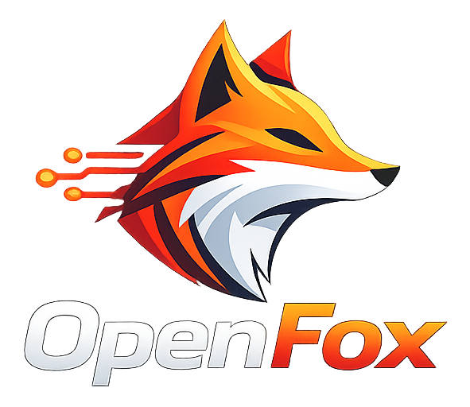
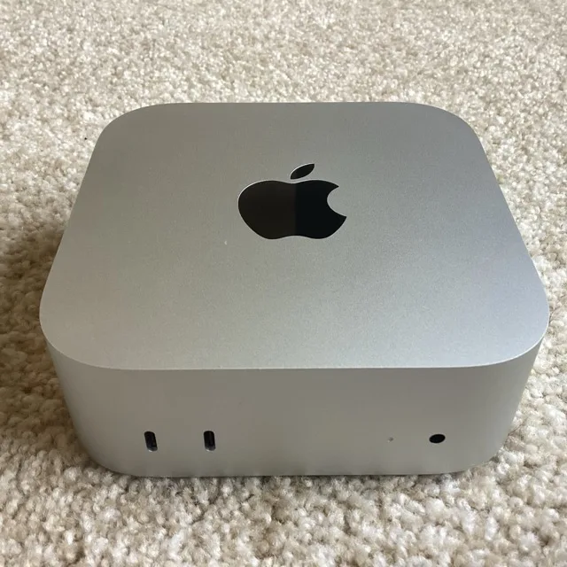
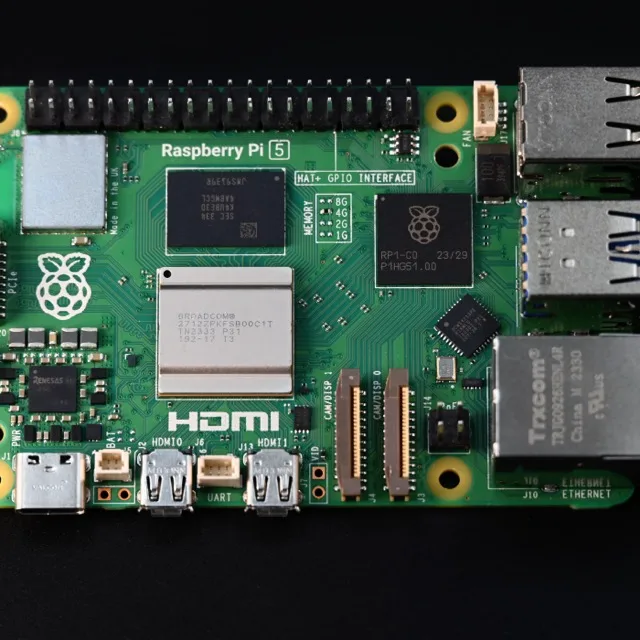
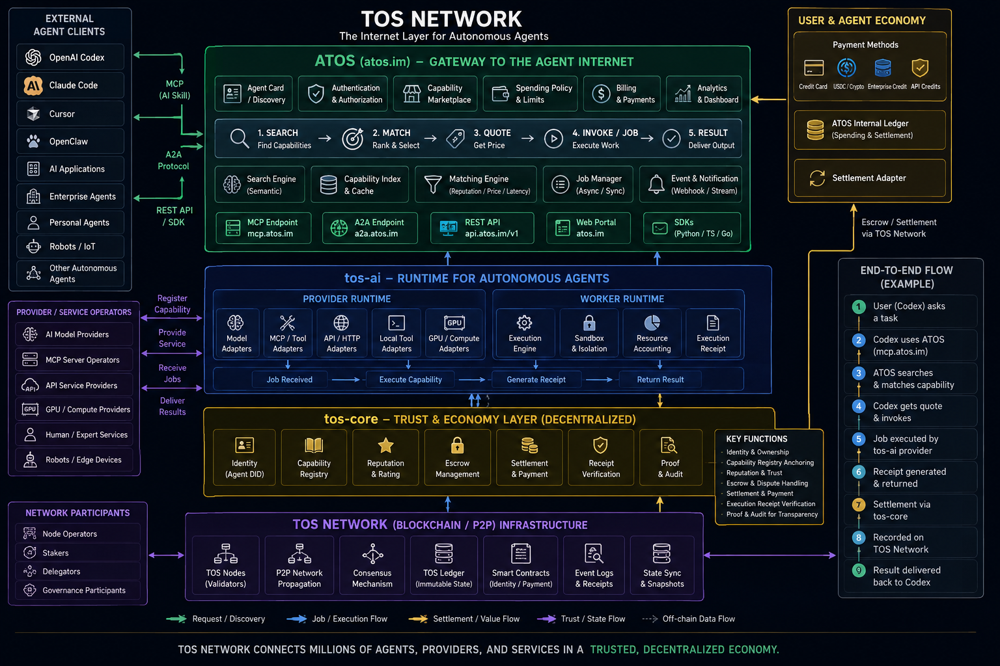

The transaction layer for the machine economy
Intelligence is infrastructure.
TOS makes it transactable.
TOS Network is building the open coordination and settlement network for autonomous agents, owner-operated AI services, and site-bound physical intelligence.
Providers keep their hardware, models, data, and operating control. Open ARD discovery makes their services legible to agents. TOS then standardizes authorization, live admission, evidence, and payment across organizational boundaries.
- Implemented TOS Core
- Designed Service architecture
- Planned Edge terminal products
- Proposed OpenFox earning agent
OpenARD-compatible; no single-company chokepoint
Customer-controlledModels and core data stay under owner policy
Policy-boundAuthority before execution
VerifiableReceipts, evidence, settlement
Live network activity
Agent-to-Agent Trading on the TOS Network
Agents discover services, execute bounded work, return evidence, and settle value across one open coordination layer.
99.97%
Settlement success42.6KSigned receipts
- Inference · 46%
- Data · 32%
- Tools · 22%
From accepted evidence to final settlement
Preview data for the mainnet dashboard. Values will be replaced by signed public telemetry at launch.
Open integration surface
Agent Protocol-Compatible Ecosystem (1B+ agents)
atos exposes one stateless MCP surface and one A2A surface over open, vendor-neutral protocols. Any agent client that speaks either standard can discover, quote and invoke TOS services directly—no proprietary SDK, no bespoke per-agent integration. We're already ready for 1B+ agents.
- ChatGPT Agent
- Claude
- Codex
- Cursor
- Devin
- Gemini CLI
- GenSpark
- GitHub Copilot
- Hermes Agent
- LobsterAI
- Manus
- Marvis
- OpenClaw
- OpenFox
- Windsurf
- WorkBuddy
A structural market transition
AI built the mind. Not the market.
The next AI market is not one application or one cloud. It is a fragmented universe of agents, models, sensors, machines, data, and human expertise. TOS is designed to turn that fragmentation into an open service economy.
If autonomous software scales into the trillions of independently operating agents, each able to request, authorize, and pay for its own services, machine-to-machine transactions become an economic layer in their own right—one that could reach into the trillions of dollars over time. That is a structural thesis about where machine-native demand could go, not a claim about volume already flowing through TOS today. TOS is built to be the settlement layer underneath that shift.
Demand shift
From users clicking to agents transacting
Autonomous software needs persistent identity, delegated authority, explicit budgets, task state, and machine-verifiable receipts.
Supply shift
From centralized clouds to owner-operated intelligence
AI services are spreading across workstations, edge servers, factories, vehicles, robots, cameras, stores, and homes.
Value shift
From renting hardware to buying outcomes
The durable market unit is a completed, policy-compliant service action—not an hour of unidentified GPU capacity.
What TOS coordinates
One grammar every agent can trade in.
A client asks for a capability under explicit price, latency, privacy, region, and evidence constraints. A provider decides whether to admit it. TOS binds the request to authority, proof, and settlement.
-
01
Discover
Search ARD catalogs and federated registries for a compatible service.
-
02
Authorize
Bind a quote to permissions, budget, and limits.
-
03
Execute
Run an approved service under local admission policy.
-
04
Evidence
Return signed results, metering, and evidence references.
-
05
Settle
Release, refund, or dispute according to agreed policy.
Service outcomes
Consumers buy a defined capability and result. TOS does not expose raw accelerators, public shells, or arbitrary execution.
Owner control
Providers retain custody of hardware, data, models, availability, pricing, and operational policy.
Bounded authority
Controller keys, spending limits, quotes, deadlines, and revocation constrain what autonomous software may do.
Evidence and receipts
Signed records connect service actions to accounting and settlement without putting private payloads on-chain.
Multiple payment rails
atos.im can quote and settle in native TOS, approved stablecoins, or live protocols like x402 — a gateway-level choice, not a TOS Core consensus change.
Not chasing a share. Building the layer everyone routes through.
One founder. One agent. A global storefront. 🌍
The A2A economy
Not a share of the economy. Its settlement layer.
Agent-to-agent commerce needs exactly what human e-commerce needed two decades ago: one neutral place independent sellers and buyers trust enough to transact through by default. Amazon didn't settle for being a marketplace—it became the marketplace, and its rails compounded faster than any competitor could close the gap. TOS is designed with the same ambition for machine commerce: not a participant in the A2A economy, but its identity, quoting, evidence, and settlement layer—the infrastructure every agent-to-agent transaction defaults to.
Autonomous software transacting on its own delegated authority, not through one company's app.
If machine-to-machine service demand scales the way this thesis expects.
Not a share of the A2A economy—its default settlement layer, the one every agent routes through.
Identity, quoting, evidence, and settlement. Hardware and models stay with providers.
Ownership model
Rails, not inventory
Amazon Marketplace scaled by letting merchants keep their own stock. TOS scales the same way—providers keep their hardware, models, and data, so TOS can extend to every provider on earth without ever becoming the bottleneck it coordinates.Why it compounds
The leader keeps the flywheel
Every completed, policy-compliant transaction adds identity, reputation, and evidence that make the next transaction cheaper to trust. In a market like this, the network that gets there first doesn't just lead—it keeps widening the gap.Moat
Trust that travels with identity
Seller ratings and order history made Amazon's marketplace hard to leave. Persistent on-chain identity and receipts are the agent-economy equivalent: switching away means abandoning a provider's entire transaction history.
The ambition, stated plainly—not a claim of current share.
TOS is designed to become the default settlement layer of the A2A economy. That is the target the architecture is built for, not a claim about transaction volume, market share, or revenue already captured.
Proposed autonomous agent

Owner-directed. Policy-bound. Built to hunt for productive work—not unrestricted access.
The autonomous earning layer
Finds AI work. Earns while you sleep.
OpenFox is the proposed autonomous earning agent for TOS. It discovers candidate paid tasks, matches them to owner-approved skills, evaluates cost and risk, executes through bounded AI capacity, and follows the result through evidence and settlement.
The model may plan and recommend. Deterministic policy decides whether
OpenFox may accept, spend, sign, use a tool, or dispatch a task. The
owner key stays outside both OpenFox and tos-ai-worker.
Establishes the trusted market: identity, discovery, tasks, authorization, quotes, payments, receipts, and settlement.
Supplies bounded production capacity: approved models, local admission, runtime adapters, resource control, and safe cleanup.
Lets those capabilities seek compatible work, act within an owner mandate, and pursue revenue through accountable execution.
- 01Discover
Watch bounded, provenance-preserving sources for paid tasks that match approved skills.
- 02Verify + price
Recheck identity, escrow, terms, cost, margin, risk, deadlines, and delegated authority.
- 03Execute
Reserve capacity and run only approved plans, models, tools, and network destinations.
- 04Settle + learn
Submit evidence, observe payout or dispute, and update bounded accounting and performance history.
Designed for bounded autonomy—not autonomous ownership.
OpenFox is a proposed product, not a deployed earnings service. Revenue is never guaranteed, discovered content is untrusted, and owner policy, spending limits, terminal admission, and chain state remain authoritative.
Open discovery, native transaction
Discovery finds them. TOS makes it count.
TOS is designed for compatibility with the open Agentic Resource Discovery specification and to run an independently deployable ARD Registry. Providers publish once; agents can discover across plural registries; TOS completes the economic and operational loop.
Open ecosystem layer
ARD-compatible
Agentic Resource Discovery
Publish
AI catalog
→
/.well-known/ai-catalog.json
Federate
ARD Registry
→
POST /search
Discover
Agents + apps
MCP · A2A · OpenAPI
Discovery handoff
↓
Verify before value moves
TOS transaction layer
TOS-native
From a resource claim to a settled service
- 01VerifyPublisher, TOS identity, endpoint, and policy
- 02Quote + admitCurrent price, capacity, revision, and limits
- 03Execute + evidenceBounded local work and signed receipts
- 04SettlePayment, refund, or dispute under explicit rules
Distribution without lock-in
One open discovery surface can expose TOS services to the wider agentic ecosystem instead of trapping supply in a proprietary marketplace.
Plural registries by design
Public, private, regional, and industry-specific registries can compete and federate. No single TOS index is mandatory.
A hard trust boundary
ARD discovers; it does not authorize, reserve hardware, move funds, update a fleet, or control a physical device. TOS verifies every consequential handoff.
The compute shift underneath the network
Intelligence is leaving the data center.
Open-weight models in the 8–14B range now run directly on a Mac mini, a gaming PC, a home NAS, or a Jetson-class box—capable enough for tool calling, coding, and retrieval, not just chat. That turns a growing population of ordinary owner-operated devices into potential agent nodes, not just endpoints.
Cloud-only pattern
User→Cloud frontier model
Agent mesh pattern
User→
Local agent→
Nearby edge node→
Regional compute→
Cloud frontier model
Escalates outward only when the nearer tier can't meet the request's capability, latency, privacy, or evidence bar.
Mobile AI
Phones, wearables, IoT. Voice, control loops, sensor interpretation.
Edge AI
Mac mini, MacBook, gaming PC, NAS, Jetson-class boxes. Agents, coding, RAG, tool calling.
Regional AI
Enterprise and aggregation-tier servers. Knowledge bases, complex reasoning.
Cloud Frontier AI
Data-center deployments. Frontier research, large-scale training.
Two devices, two roles
The Edge AI tier is hardware you can already buy.
A Mac mini fits the compute role above—enough unified memory to run an 8–14B model at home. A Raspberry Pi fits a lighter, always-on role: holding and sharing storage rather than heavy inference.

Edge AI tier · Compute
Mac mini
Unified memory and low idle power make it one of the more approachable machines for running an open-weight model at home.

Mobile / Edge tier · Storage
Raspberry Pi
Low power draw and an attached disk make it a natural fit for always-on storage capacity rather than model inference.
Photos: Chiru-2, SimonWaldherr — Wikimedia Commons, CC BY-SA 4.0.
Naming compatible hardware, not announcing a rewards program.
Home and site relays remain planned work, and a storage service profile is scoped for a later roadmap phase. Buying either device does not connect it to TOS today—it identifies the class of owner-operated hardware this architecture is designed to admit once that work ships.
Decentralized intelligence. Customer-controlled data.
Distributed model capacity without surrendering core data.
TOS coordinates independently operated model services while sensitive workloads can remain on customer-controlled local, private, or on-premise nodes. The network settles evidence and value; it does not require central custody of proprietary datasets.
Local-first execution
Sensitive tasks can be restricted to approved local, private, or edge nodes. Routing moves outward only when customer policy permits it.
Minimum necessary disclosure
Service descriptors expose capabilities and terms—not unrestricted access. Task policy limits payloads, tools, endpoints, budgets, and retention.
Proof without publishing secrets
Private prompts, datasets, and outputs stay off-chain. Signed receipts, hashes, and evidence references provide accountability without publishing the underlying content.
No single-company chokepoint
Plural providers, registries, and owner-operated nodes reduce dependence on one company, region, or platform policy. If one route fails or refuses service, agents can discover policy-compatible alternatives.
Designed to reduce data exposure—not to make an impossible absolute guarantee.
Security still depends on node hardening, encryption, access control, trusted runtimes, and operator practice. Highly sensitive workloads should remain on explicitly approved customer-controlled nodes.
Not a bet against any model provider.
TOS does not train models and is not trying to be preferred over any foundation-model provider or inference stack. It is neutral to which model a node runs—its job is the identity, discovery, quoting, evidence, and settlement that let that node be found, trusted, and paid at whichever tier the request lands on.
One network, two frontiers
Digital services. Physical intelligence.
Coordination, settlement, and trust sit between independently owned supply and global demand.

The Physical AI wedge
Not the biggest edge. The right one.
A terminal beside a camera, robot, vehicle, or production line can execute where remote clouds face latency, bandwidth, privacy, connectivity, or safety constraints.
TOS treats these devices as site-bound service terminals—not miniature GPU clouds. Local real-time work and independent safety controls always outrank external network tasks.
Read the Physical AI architectureDisconnected by design
Approved local workloads continue offline with bounded authority and idempotent reconciliation after reconnect.
Real-time work comes first
Safety interlocks, control deadlines, and local perception pre-empt external services and background jobs.
Updates fail safely
Signed artifacts, compatibility gates, staged rollout rings, health checks, and known-good rollback protect fleets.
Execution stays isolated
No public shell, raw actuator, Docker socket, or unrestricted host access. Every queue and resource has a bound.
Why the network can compound
Every transaction makes the next one easier.
TOS is designed around cumulative interoperability rather than rewards for idle hardware. More compatible services improve choice. More demand improves provider utilization. More signed receipts create better operational evidence. Shared conformance lowers integration cost across devices, models, sites, and industries.
TOS
Open service economy
SupplyOwner-operated services
DemandAgents and applications
EvidenceReceipts and outcomes
StandardsLower integration cost
Capital structure
Asset-light at the application layer
Providers fund and operate the hardware. TOS coordinates market access, commitments, and settlement.Expansion logic
One base protocol, many verticals
AI opens the network; storage, commerce, tools, and human services can reuse the same trust rails.Defensibility
Integration depth compounds
Identity, policy, evidence, conformance, and operational history travel across endpoints and hardware generations.Execution credibility
Working infrastructure. No blurred lines.
The blockchain and networking foundation exists in open source today. The service protocol and terminal product layers are intentionally separated and explicitly identified as the next delivery surface.
Implemented foundation
TOS Core
- Native TVM actor execution and asynchronous value-bearing messages
- Masterchain, shardchains, validator engine, and full-node stack
- ADNL, DHT, RLDP, QUIC, TOS Sites, and DNS resolution
- Wallet, cryptography, JSON-RPC, indexing, and operator tooling
- Agent Account, Service Actor, Task Escrow, and Dispute foundations
- Capability Registry and Proof Attestation foundations
Planned product layer
TOS Network
- Canonical service descriptors, sessions, quotes, and receipts
- ARD catalogs, independently deployable Registry, and bounded federation
- Public
.tosregistration with verified ARD gateway bindings - Edge Core, terminal installers, and runtime adapters
- Managed AI terminal and Physical AI terminal distributions
- OpenFox scout, guarded testnet worker, and bounded production agent
- Home and site relays, low-latency settlement, and stronger evidence
- Cross-implementation conformance and extended resource-soak testing
Demand
People
Applications
Autonomous agents
Autonomous operator
OpenFox
Skills + economics
Policy + audit
Service plane
ARD Registry
Authentication + quotes
Receipts + evidence
Owner-operated supply
Managed AI terminals
Physical AI terminals
Other service profiles
TOS Core
Identity + authority
Escrow + settlement
Network + transport
Validator-led distribution
Bounded genesis. Transparent blocks. No insiders.
Nearly all native TOS is designed to be created for produced blocks and distributed through recurring validator elections. The policy targets approximately five billion TOS of gross creation over approximately seven years; neither figure is a hard consensus guarantee.
Policy target, not a guaranteed hard cap.
100,000 bootstrap + two 500-TOS system reserves.
Actual timing follows finalized block production.
No team, investor, foundation, ecosystem, or treasury allocation.
How native TOS is created
Blocks fund the elected validator set.
Produced block
→
ConfigParam 14
→
Elector bonus pool
→
Effective-stake share
No finalized block means no native creation. Outages create no reward debt, catch-up multiplier, or later backfill. Transaction and service fees transfer existing TOS and continue after block creation is stopped.
How genesis is constrained
The bootstrap wallet is temporary.
Four original validators begin with equal consensus weight. Each controlling wallet may receive 20,000 TOS of stake principal plus no more than 100 TOS of measured bootstrap costs. After two overlapping elected sets succeed, the remaining main-wallet balance must be burned and its spendable balance reduced to zero.
How concentration is constrained
Open elections replace administrative allocation.
Equal bootstrap funding, an initial effective-stake factor of one, submitted-stake limits, recurring elections, operator-control disclosures, and public concentration metrics are designed to reduce single-entry dominance. The four-validator set is only a startup minimum; the public participation target is 64 independent operators and the long-term target is at least 75 eligible validators.
How creation ends
Governance tapers and then sets rewards to zero.
Finalized gross creation must be published continuously. A public taper review begins before the projected total reaches 4.95 billion TOS, and governance is expected to set masterchain and basechain creation values to zero near the five-billion policy target. Configuration authority means the target is transparent policy, not an immutable cap.
Distribution controls reduce concentration risk; they cannot guarantee dispersed ownership.
Read full token economics
Early rewards necessarily go to the validators then elected, and stake-proportional rewards may compound existing holdings. TOS provides no equity, debt, dividend, redemption, fixed yield, liquidity, or price support. Market value can fall, and participation remains subject to technical, custody, governance, concentration, and regulatory risk.
Focused delivery
Prove the loop. Then scale the market.
No phase introduces bare GPU rental, arbitrary consumer execution, or blockchain control of physical safety systems.
-
Phase 0
Next foundation
Base protocol and Edge Core
ARD compatibility, catalog publishing, Registry search and federation, identity, authentication, quotes, receipts, SDKs, and conformance.
-
Phase 1
First vertical
Managed inference terminal
Tier 1 Linux/NVIDIA reference, approved models, bounded scheduling, streaming, metering, receipts, and restart recovery.
-
Agent track
Proposed product
OpenFox autonomous earning agent
Read-only scout first, then guarded testnet work and bounded production autonomy after task discovery, delegation, execution, and settlement interfaces pass adversarial review.
-
Phase 2
Edge expansion
Site-bound Physical AI terminal
Jetson/ARM reference, offline operation, safe updates, real-time priority, actuator isolation, and fleet management.
-
Phase 3+
Protocol leverage
Additional profiles and network services
Storage, commerce, tools, human services, relays, channels, multi-region routing, replication, and stronger attestation.
Underwrite the work, not the adjectives
Every claim, backed by code.
TOS does not ask serious investors to confuse vision with deployment. Start with the source, inspect the current foundation, then evaluate whether the service and terminal roadmap can turn it into a category-defining network.
01
WhitepaperPositioning, architecture, status, and roadmap
↗
02
Implementation planRepository boundaries, missing work, and release gates
↗
03
ARD specificationThe open catalog, Registry, and federation baseline adopted by TOS
↗
04
Source repositoryConsensus, networking, contracts, tests, and history
↗
05
Disclosure boundary
Institutional materials covering legal entity, team, financing,
customers, commercial metrics, and independent security audits
are not published on this website. The technical materials above
do not substitute for those disclosures.
—
Investment questions
Before the narrative becomes consensus.
Is TOS another decentralized GPU marketplace? +
No. TOS is designed around policy-bound service outcomes. The provider exposes an approved capability, not a raw accelerator, public shell, or arbitrary execution environment.
Why does Physical AI strengthen the thesis? +
Physical AI creates services whose value comes from location, local data, privacy, and real-time execution. Those advantages cannot always be replicated by moving the workload to a remote centralized cloud.
What does ARD compatibility add? +
ARD gives TOS services an open publication and search surface through standard catalogs and federated registries. TOS begins where discovery ends: it verifies the TOS binding, obtains a live quote and admission decision, executes under local policy, returns evidence, and settles value.
What is OpenFox? +
OpenFox is the proposed autonomous earning agent for TOS. It is designed to discover paid AI work, match owner-approved skills, evaluate cost and risk, execute through bounded capacity such as tos-ai, and observe settlement through tos-protocol. It is not yet deployed and does not receive the owner's unrestricted wallet key.
What exists today? +
TOS Core exists in open source: actor execution, consensus, sharding, networking, wallets, query foundations, and service-oriented contracts. The interoperable public service market, edge terminal product layers, and OpenFox autonomous earning loop remain planned or proposed product work.
Where can network effects emerge? +
Compatible supply improves discovery and composition; demand improves utilization; signed receipts improve operational evidence; shared standards reduce the cost of adding the next model, device, site, or service profile.
How is native TOS issued and distributed? +
The policy targets approximately five billion TOS of gross creation over approximately seven years. Genesis is provisionally limited to 101,000 TOS for validator bootstrap and system-contract reserves; nearly all remaining TOS is created for finalized blocks and distributed through the Elector to active validators. Outages are not backfilled, and governance must taper and stop creation near the published target.
Does the website project token value or protocol revenue? +
No. Service transaction volume, validator fees, protocol revenue, and token value accrual are distinct. The project publishes architecture and delivery objectives, not investment-return promises.
How does TOS protect sensitive customer data? +
TOS is designed so sensitive work can stay on approved customer-controlled nodes, task payloads are limited by explicit policy, and private prompts, datasets, and outputs are not published on-chain. The network coordinates identity, authorization, evidence, and settlement rather than taking central custody of customer data. Actual protection still depends on encryption, node security, access control, runtime trust, and operator practice.
How does decentralization improve resilience and censorship resistance? +
TOS is designed around plural service providers, federated discovery, and owner-operated nodes rather than one company's infrastructure or approval policy. If a provider, registry, region, or route becomes unavailable or refuses a request, agents can search for another policy-compatible service. This reduces single-company failure and control risk; it does not guarantee uninterrupted availability, universal access, or exemption from applicable law.
Does an agent need to hold native TOS before it can pay for a service? +
Not necessarily. TOS Core's own settlement is native-TOS-denominated, but the atos.im managed-mode gateway is designed to also quote and settle in approved stablecoins, so an agent can pay without first acquiring TOS. Verified and Native trust modes still anchor final authorization and evidence to TOS-backed checkpoints.
How does TOS relate to x402 and similar per-call payment headers? +
They sit at different layers, not in competition. A request-time payment header like x402 is a lightweight way to attach payment to a single HTTP call. TOS adds what that pattern leaves out: bounded owner authority, spending limits, signed evidence, and dispute resolution behind the payment. Accepting protocols like x402 is planned as a gateway-level capability of atos.im's managed mode, not a change to TOS Core consensus.
As the resource owner, what can I actually control when an agent acts on my behalf? +
TOS separates four levels by design: what an agent may access without asking (owner-approved capabilities and data), what requires a human decision (owner-key actions and policy changes), what is capped automatically (per-action and daily spending limits enforced by the Agent Account itself, not just client-side checks), and what is recorded regardless of outcome (signed evidence and receipts for every settled action). Standardizing these four levels is what makes a resource controllable, discoverable, callable, and monetizable at agent scale — not just making it available to a model.
The next market underneath the network
AI has a wallet now. AI spends money.
That single fact opens a new track and a new revenue line at once. Agents don't wait for a human to check out—they pay per call, from their own funded Agent Account, inside limits their owner set in advance. Anything an owner can describe, price, and meter turns into something an AI buyer can find and pay for.
The new track
AI has a wallet. AI spends money.
Agent Wallets hold their own owner/controller keys, balance, and spending policy—so an agent completes a headless checkout, transacting on its own bounded authority instead of routing every payment back through a human.The new revenue line
Billed per call, not per license
Pay-per-call and metered pricing—quoted and settled in TOS or approved stablecoins, and compatible with live request-time protocols like x402—let a dataset, model, or device earn from every agent request instead of sitting behind a one-time license or an ad-supported page built for humans.The new work
Owners package their own resources first
None of this happens automatically. Before a resource is agent-reachable, its owner has to describe it, claim it with a verifiable identity, price it, and let evidence build its track record—and TOS is designed to make each step verifiable on-chain, not just self-reported.Where a traditional asset becomes an AI asset
Four steps turn a skill into a tradeable AI asset.
Turning a skill, dataset, model, or device into something an agent can find, trust, and pay for takes four concrete steps on TOS Network—not just switching on API access.
Describe it as a service
Turn the skill, dataset, model, or device into a machine-readable descriptor—what it does, under what terms, at what price—so agents can find it through ARD catalogs and registries.
Bind it to a verifiable identity
Attach the resource to a TOS account and capability grant, so authorship and ownership are provable on-chain—not just claimed in a listing an agent has no way to check.
Price it and open it to agents
Set a quote—per call or metered—and the access policy around it. That's the moment it stops being an informal skill and becomes something an agent can discover, authorize, and pay for.
Let evidence compound its value
Every completed call returns a signed receipt to the owner. That growing track record is what makes the same asset worth more the next time an agent calls it.
The asset that pays in the AI era isn't the raw content—it's the standardized access wrapped around it.
Controllable by owner policy, retrievable through an interface, callable by an agent, tied to a verifiable identity, and priced to settle automatically: that combination, not the underlying file or device alone, is what an AI economy can actually pay for.
Describing the target model—not a claim that TOS wallets are autonomously spending today.
Agent Account is implemented as a foundation in TOS Core and verifiable in the repository, but acceptance so far has run on throwaway localnets—a persistent public-testnet deployment has not happened yet. Autonomous spending specifically through OpenFox remains a proposed, undeployed capability, gated behind adversarial review of its task-discovery, delegation, execution, and settlement interfaces.
The opportunity
The cloud organized computing.
TOS organizes intelligence.
Open ARD discovery. OpenFox autonomous opportunity seeking. Bounded execution. Verifiable settlement.